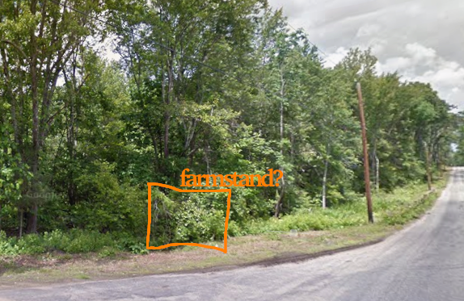

Updated August 16 2026.
E-mail me: 

2027 will be the first year of the farmstand.
Apios americana, groundnut, 'Hockanum forage'
Marigold 'Mr. Majestic'
Lily family. Beach lover. Umm...many varieties trialing! Ideas: Plant with tomato, they are supposed to repel eachothers pests. Plant with saffron, I could plant a row of saffron bulbs between asparagus beds. What kind of tool is best to harvest asparagus? Score: vigor, thickness, resistances, flavor, color.